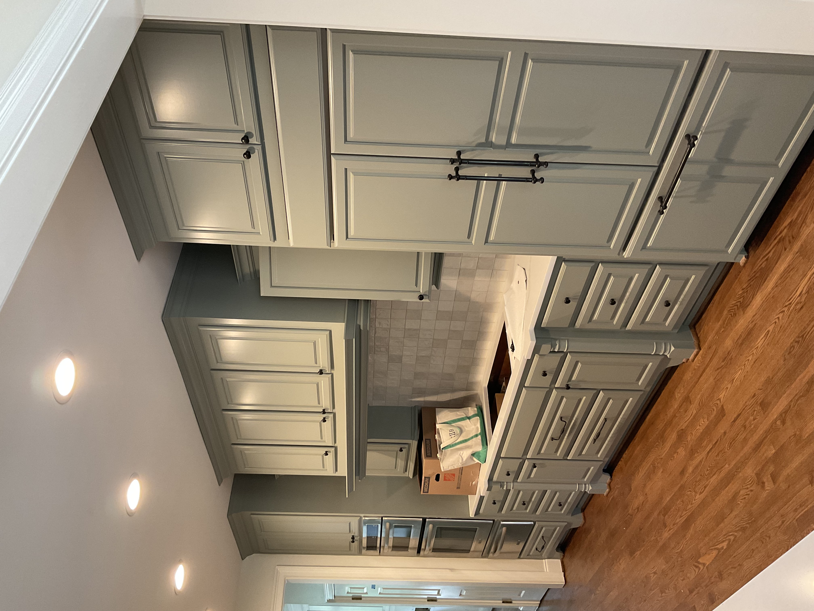
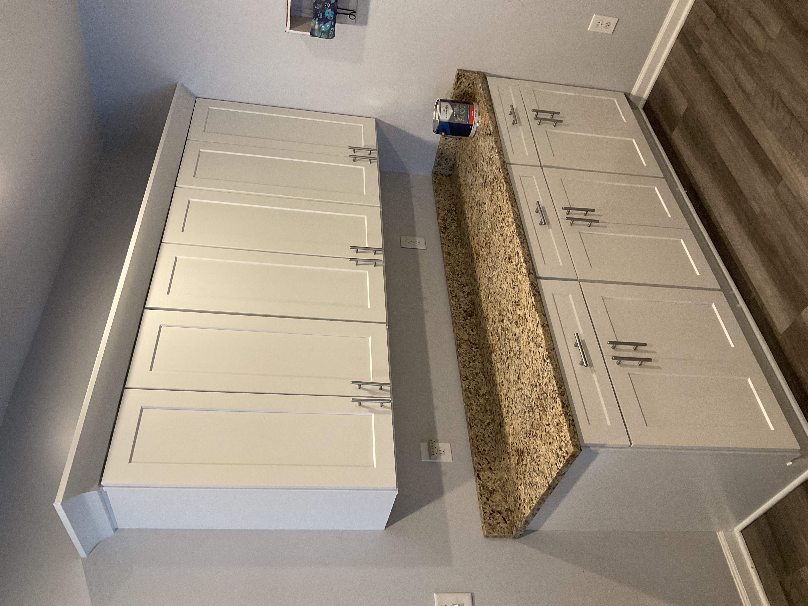
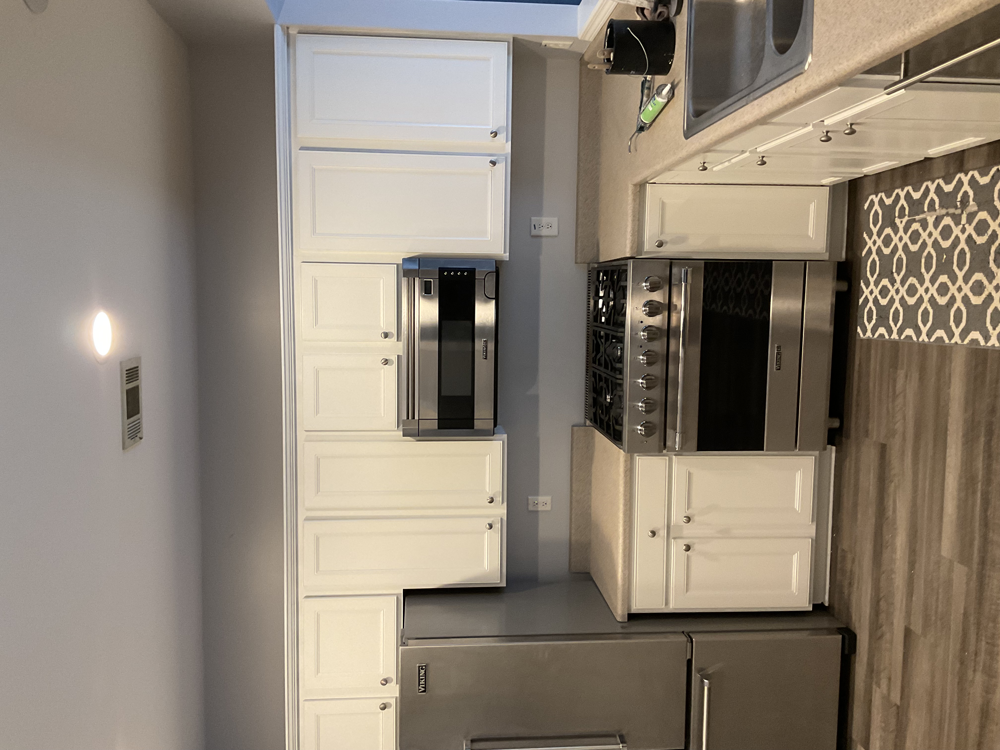
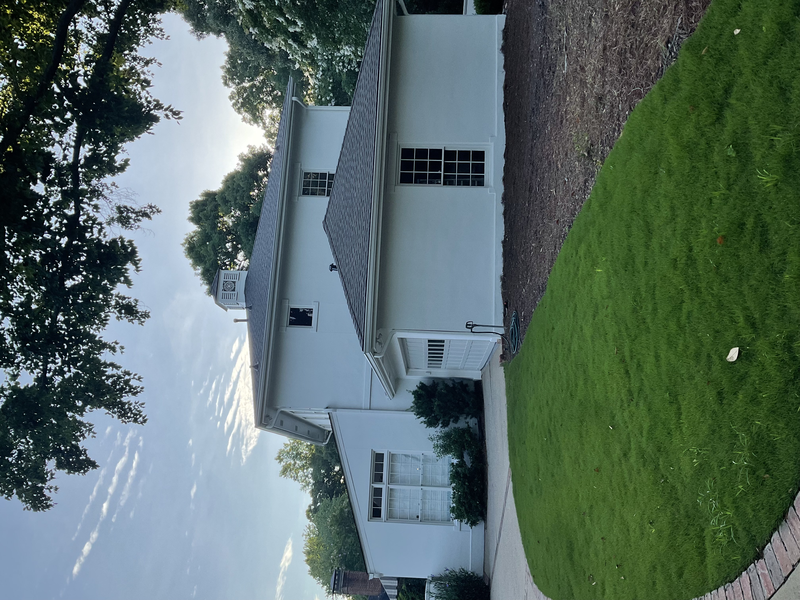
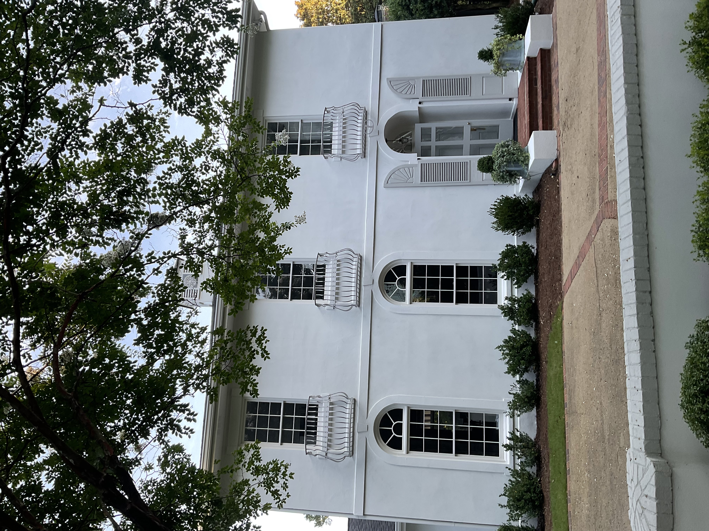

Interior Painting
Flawless walls, ceilings, and trim — delivered clean, on time, and built to last.
Get a Free EstimateWhat We Do
We handle every room in your home — from living areas and bedrooms to kitchens, bathrooms, and stairwells. Our process starts with careful prep: protecting your floors and furniture, filling holes, sanding surfaces, and priming where needed. The result is a smooth, even finish that looks great and holds up over time.
Our Work






Why Choose Us
- Full-Room Coverage — Walls, ceilings, trim, doors, and accent features all handled in one visit.
- Thorough Prep Work — We patch, sand, and prime surfaces so paint adheres evenly and lasts longer.
- Clean Jobsite — We protect your belongings, lay down drop cloths, and leave every room tidy when we're done.
- Color Consultation — Not sure what color to choose? We'll help you find the right shade for your space.
- Free Estimates — We give you an honest, detailed quote before any work begins. No surprises.